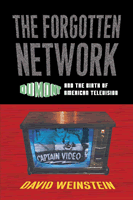

<body bgcolor="#FFFFFF" text="#000000" link="#0000FF" vlink="#CC0000" alink="#CC0000"><center><hr width="350" size="1" align="center" noshade>A history of "the forgotten network," as seen through its own programs and personalities<hr width="350" size="1" align="center" noshade><p><a href="https://cdcshoppingcart.uchicago.edu/Cart/ChicagoBook.aspx?ISBN=9781592132454&&PRESS=temple" target="_top">Buy this book!</a> | <a href="https://cdcshoppingcart.uchicago.edu/Cart/Cart.aspx?PRESS=temple" target="_top">View Cart</a> | <a href="https://cdcshoppingcart.uchicago.edu/Cart/Cart.aspx?PRESS=temple" target="_top">Check Out</a></p><p></p></center><!--none//--><h1>The Forgotten Network</h1>
<H2>DuMont and the Birth of American Television</H2>
<h3>David Weinstein</h3>
<P>cloth 1-59213-245-6 $61.50, May 04, <FONT COLOR=#990033>Out of Stock Unavailable</FONT>
<br>paper 1-59213-499-8 $28.95, Mar 06, <FONT COLOR=#990033>Available</FONT>
<BR> 240 pp
6x9
39&nbsp;halftones
</P><BLOCKQUOTE><I>"Television has changed the way we live in ways most of us take for granted. In a well researched, informative, and entertaining book, David Weinstein looks at the history of the Dumont network. During its nine-year run beginning in 1946, DuMont created a legacy that includes </i>The Honeymooners<i>, </i>Captain Video<i>, Sid Caesar's </i>The Admiral Broadway Review<i>, and Ernie Kovacs. DuMont laid the foundation for a medium that continues to enlighten, inform, educate, and entertain us."</i>
<br>&#151<b>Eddy Friedfeld</b>, WOR Radio, and co-author, <i>Caesar's Hours</i><i></I></BLOCKQUOTE>
<p>During the late 1940s and early 1950s, the name DuMont was synonymous with the new medium of television. Many people first watched TV on DuMont-brand sets, the best receivers money could buy. More viewers enjoyed their first programs on the DuMont network, which was established in 1946. Network founder Allen B. Du Mont became a folk hero for his entrepreneurial spirit in bringing television to the American people. Yet, by 1955, the DuMont network was out of business and its founder and namesake was forced to relinquish control of the company he had spent a quarter century building.
<p>The heart of David Weinstein's book examines DuMont's programs and personalities, including Dennis James, <i>Captain Video</i>, Morey Amsterdam, Jackie Gleason and <i>The Honeymooners</i>, Ernie Kovacs, and <i>Rocky King, Detective</i>. Weinstein uses rare kinescopes, archival photographs, exclusive interviews, trade journal articles, and corporate documents to tell the story of a "forgotten network" that helped invent the very business of network television.
<p>An original and important contribution to the history of television, <i>The Forgotten Network</i> provides a glimpse into the dawn of broadcasting and the growth of our most ubiquitous cultural medium.
<BR>&nbsp;<h2>Excerpt</h2><P>Excerpt available at <a href="http://www.temple.edu/tempress">www.temple.edu/tempress</a></p>
<BR>&nbsp;<h2>Reviews</h2>
<p><i>"In </i> The Forgotten Network<i>, David Weinstein performs a singular task of historical recovery, using archival materials and recollections of surviving DuMont employees to bring to life the story of this maverick network... Weinstein's book is elegantly written, richly detailed, and offers the reader a glimpse into an era that has all but vanished."</i>
<br>&#151<b>Wheeler Winston Dixon</b>, <i>Quarterly Review of Film and Video</i>
<p><i>"In </i>The Forgotten Network<i>, David Weinstein moves with sure mastery and ready wit through the technological issues, political machinations, and blurry kinescopes that tell the story of the ill-starred DuMont network. Sharply insightful and smartly written, Weinstein's TV guidebook to a lost chapter in American broadcasting is a major contribution to both television studies and Cold War history. He answers a question that has bedeviled media scholars for decades: how did four networks become three?"</i>
<br>&#151<b>Thomas Doherty</b>, Brandeis University, and author of <i>Cold War, Cool Medium: Television, McCarthyism, and American Culture</i>
<p><i>"[His] research makes a convincing case that relegating the DuMont network to a footnote in broadcast history is an impoverishing oversight."</i>
<br>&#151<b><i>Television Quarterly</i></b>
<p><i>"Weinstein's title is right on the mark....It is this emphasis on programs which makes this book so useful, as there has long been but scattered information on many of the shows telecast."</i>
<br>&#151<b><i>Communications Booknotes Quarterly</i></b>
<p><i>"The author has helped to resurrect an important story, and he tells it well.... The emphasis on programs makes this book so useful, as there has long been but scattered information on many of the shows telecast.... Weinstein has done a creditable job relating this sometimes complex story, a vital part of American television."</i>
<br>&#150<b><i>American Journalism</i></b>
<p><i>"David Weinstein has performed a valuable and substantial task for media scholarship in producing this engagingly written and well-researched study of DuMont...it is very good to see this accessible and fascinating account of DuMont."</i>
<br>&#151<b><i>Journal of Broadcasting and Electronic Media</i></b>
<p><i>"An important [story]... Highly recommended."</i>
<br>&#151<b><i>Choice</i></b>
<p><i>"Absorbing."</i>
<br>&#151<b><i>Reason</i></b>
<p><i>"This book needed to be written.... Author David Weinstein immersed himself in all things DuMont, and his thoroughness is commendable...this book provides a fascinating look into television in those formative years."</i>
<br>&#151<b><i>The Journal of Popular Culture</i></b>
<p><i>"...engaging... Weinstein makes effective use of corporate records and oral histories in a study that is both good business and cultural history."</i>
<br>&#151<b><i>The American Historical Review</i></b>
<p><i>"Thankfully, David Weinstein allows us to rediscover DuMont in the first comprehensive history, an outstanding institutional history of American television, of the network. Weinstein’s accomplishment in piecing together the network’s history from its few surviving traces deserves the attention of anyone interested in the history of post-war American culture and the respect of all who recognize the dedication and imagination that has gone into this research."</i>
<br>&#151<b><i>Film Quarterly</i></b>
<BR>&nbsp;<P><p>Learn more about this book and the history of early television at <a href="http://www.theforgottennetwork.com/" target="new">www.theforgottennetwork.com</a>.</P><BR>&nbsp;<br>
<h2>Contents</h2><P>
<p>A Note on Spelling
<br>Preface and Acknowledgments
<br>1. My Father Was an Engineer
<br>2. From Basement to Broadway
<br>3. Who Is in Charge Here?
<br>4. The DuMont Daytime Experiment
<br>5. Captain Video: Protector of the Free World and the DuMont Network
<br>6. What'd He Say? Morey Amsterdam Meets Norman Rockwell
<br>7. And Away He Went . . . Jackie Gleason and the Cavalcade of Stars
<br>8. Law and Order, DuMont Style
<br>9. A Bishop for Berle Fans
<br>10. Ernie Kovacs and the DuMont Legacy
<br>Appendix: DuMont Chronology
<br>Notes
<br>Index
</P><BR>&nbsp;<H2>About the Author(s)</H2>
<table><tr><td valign="top"><img src="/tempress/authors/1575_au.gif" height="90" width="75"></td><td width="100%" valign="middle"><p><b>David Weinstein</b> is Senior Program Officer at the National Endowment for the Humanities. He holds a Ph.D. in American Studies from the University of Maryland.</P></td></tr></table>
<BR><H2>Subject Categories</H2>
<p><A HREF="/tempress/american.html" TARGET="_top">American Studies</a>
<BR><A HREF="/tempress/mass_media.html" TARGET="_top">Mass Media and Communications</a>
<BR><A HREF="/tempress/business.html" TARGET="_top">Business/Economics</a>
</p>
<p align="center"><a href="https://cdcshoppingcart.uchicago.edu/Cart/ChicagoBook.aspx?ISBN=9781592132454&&PRESS=temple" target="_top">Buy this book!</a> | <a href="https://cdcshoppingcart.uchicago.edu/Cart/Cart.aspx?PRESS=temple" target="_top">View Cart</a> | <a href="https://cdcshoppingcart.uchicago.edu/Cart/Cart.aspx?PRESS=temple" target="_top">Check Out</a></p><p><font face="Arial" size="1"><a href="copyright.html" onMouseOver="window.status='Web Copyright Policy';return true;" onMouseOut="window.status=''" title="Web Copyright Policy">&copy;</a> 2015 <a href="http://www.temple.edu" target="new" onMouseOver="window.status='Link to Temple University home page';return true;" onMouseOut="window.status=''" title="Link to Temple University home page">Temple University</a>. All Rights Reserved. http://www.temple.edu/tempress/titles/1575_reg.html</font></p>